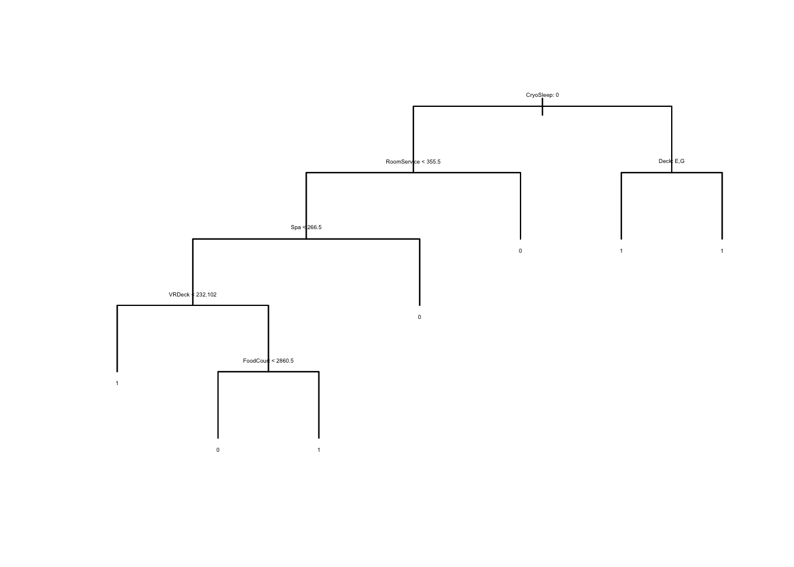

Welcome to the year 2912, where your data science skills are needed to solve a cosmic mystery. We’ve received a transmission from four lightyears away and things aren’t looking good.
The Spaceship Titanic was an interstellar passenger liner launched a month ago. With almost 13,000 passengers on board, the vessel set out on its maiden voyage transporting emigrants from our solar system to three newly habitable exoplanets orbiting nearby stars.
While rounding Alpha Centauri en route to its first destination—the torrid 55 Cancri E—the unwary Spaceship Titanic collided with a spacetime anomaly hidden within a dust cloud. Sadly, it met a similar fate as its namesake from 1000 years before. Though the ship stayed intact, almost half of the passengers were transported to an alternate dimension!
To help rescue crews and retrieve the lost passengers, you are challenged to predict which passengers were transported by the anomaly using records recovered from the spaceship’s damaged computer system.
Initial imports
I need to load all necessary libraries
library(GGally) # pairs plots
Loading required package: ggplot2
Registered S3 method overwritten by 'GGally':
method from
+.gg ggplot2
library(gam) # gam models
Loading required package: splines
Loading required package: foreach
Loaded gam 1.20
library(leaps) # regression subsetslibrary(tree) # treeslibrary(randomForest) # random forest
randomForest 4.7-1
Type rfNews() to see new features/changes/bug fixes.
Attaching package: 'randomForest'
The following object is masked from 'package:ggplot2':
margin
I will begin by importing all the necessary information and imputing data. The primary reason for imputation is because the test set of data also has missing values in it. This is generally problematic because most modern regression and tree techniques don’t work well with missing data. We can’t throw them out because they are in the test set as well. So imputation must be key. Generally there are a few options for imputation. LOCF and similar are simple, and just carry the same data forward, which may work fine for some variables but not others. In all honesty, LOCF would be a very reasonable choice here because it works fine with both numeric and string data. KNN is certainly not a good imputation choice here. Since it is not very robust to outliers, it may be a poor method given the distribution of the data itself with most numeric info being 0, and a few larger numbers, you’d run a considerable risk. Furthermore, KNN imputation won’t work with factor data, which is also missing in parts. So that leaves us with missing forests. Using random forests to impute information is much more robust than KNN, and it works quite well with both numeric and factored data. The biggest tradeoff is computational power. It takes a lot more time and power to run a missing forest. I chose missing forest for this project, as it makes the most sense for the data at hand.
VIPs had a lower probability of being transported. Earthlings had a lower probability and Europans had a higher one. Tose in cryosleep had a much higher probability of being transported. Those on the starboard side were more likely to be transported as well as those on decks b and C.
Elastic Nets
Ridge Regression
I will begin by performing multiple elastic nets. Ridge regression comes when \(\alpha = 0\) and LASSO regression comes from \(\alpha = 1\). An elastic net can result in \(\alpha\) between 0 and 1. To find values of \(\alpha\) I need to generate fold ids.
X <-model.matrix(Transported ~ ., data = Filledtrain)Transported <- Filledtrain$TransportedFoldid <-sample(1:10, dim(X)[1], replace =TRUE)lambdas <-10^(seq( -6,2, by =0.1))RidgeOut <-cv.glmnet(x = X, y = Transported,family ="binomial", alpha =0, lambda = lambdas, foldid = Foldid)RidgeDev <-deviance(RidgeOut$glmnet.fit)[RidgeOut$glmnet.fit$lambda == RidgeOut$lambda.min]plot(RidgeOut)
This will include lasso and ridge models to more easily compare the deviances of each model. What I’ve found is that the lowest deviance tends to be one of the elastic nets rather than the pure ridge or pure lasso models.
CV <-data.frame(Alphas =seq(0,1, by =0.1), LambdaMin =NA, Deviance =NA)j <-1par(mfrow =c(3,3))for (i in CV$Alphas){ eNetOut <-cv.glmnet(x = X, y = Transported,family ="binomial", alpha = i, lambda = lambdas, foldid = Foldid)plot(eNetOut) CV$LambdaMin[j] <- eNetOut$lambda.min CV$Deviance[j] <-deviance(eNetOut$glmnet.fit)[which(eNetOut$glmnet.fit$lambda == eNetOut$lambda.min)] j <- j+1}
Classification tree:
tree(formula = Transported ~ ., data = train_x, split = "deviance")
Variables actually used in tree construction:
[1] "CryoSleep" "RoomService" "Spa" "VRDeck" "FoodCourt"
[6] "Deck"
Number of terminal nodes: 7
Residual mean deviance: 0.9367 = 6550 / 6993
Misclassification error rate: 0.2194 = 1536 / 7000
plot(dtree, type ="uniform")text(dtree, pretty =0, cex =0.3)

preds <-predict(dtree, val_x, type ="class")mean(preds == val_x$Transported)
[1] 0.7861784
The tree model generated did not have a particularly large number of leaves involved. In theory I could prune according to misclassifications, but given the already small size, it might not be necessary.
Boosting
train_x2 <- train_xtrain_x2$Transported <- train_x2$Transported ==1gbmOut <-gbm(Transported ~ ., distribution ="bernoulli", n.trees =1000,interaction.depth =1, data = train_x2, shrinkage =0.01)phats <-predict(gbmOut, val_x, type ="response")
The boosted tree is only marginally better than the basic tree when looking at the accuracy on the validation set.
Random Forest and Bagging
p <-dim(train_x)[2] -1baggedTrees <-randomForest(Transported ~ ., mtry = p, data = train_x)preds <-predict(baggedTrees, val_x, type ="response")mean(preds == val_x$Transported)
[1] 0.8263438
rfTrees <-randomForest(Transported ~ ., mtry =4, data = train_x)preds <-predict(rfTrees, val_x, type ="response")mean(preds == val_x$Transported)
[1] 0.8304784
The bagged trees performed better than both the original, and the boosted tree models. However, so far the best performance has been with the random forest model produced above. I will see how each of the optimal models of each kind does against the true testing data.
# Final Predictionssubmission <-read.csv("sample_submission.csv")eNetFinal <-glmnet(x = X, y = Transported,family ="binomial", alpha = CV$Alphas[Opt], lambda = CV$LambdaMin[Opt])newX <-model.matrix(~.,Filledtest)preds <-predict(eNetFinal, newX, type ="response")preds <- (preds >=0.5)submission$Transported[preds] <-"True"write.csv(submission, "eNetSubmission.csv",row.names =FALSE)submission$Transported <-"False"preds <-predict(dtree, Filledtest, type ="class")submission$Transported[preds ==1] <-"True"write.csv(submission, "TreeSubmission.csv",row.names =FALSE)submission$Transported <-"False"preds <-predict(gbmOut, Filledtest, type ="response")